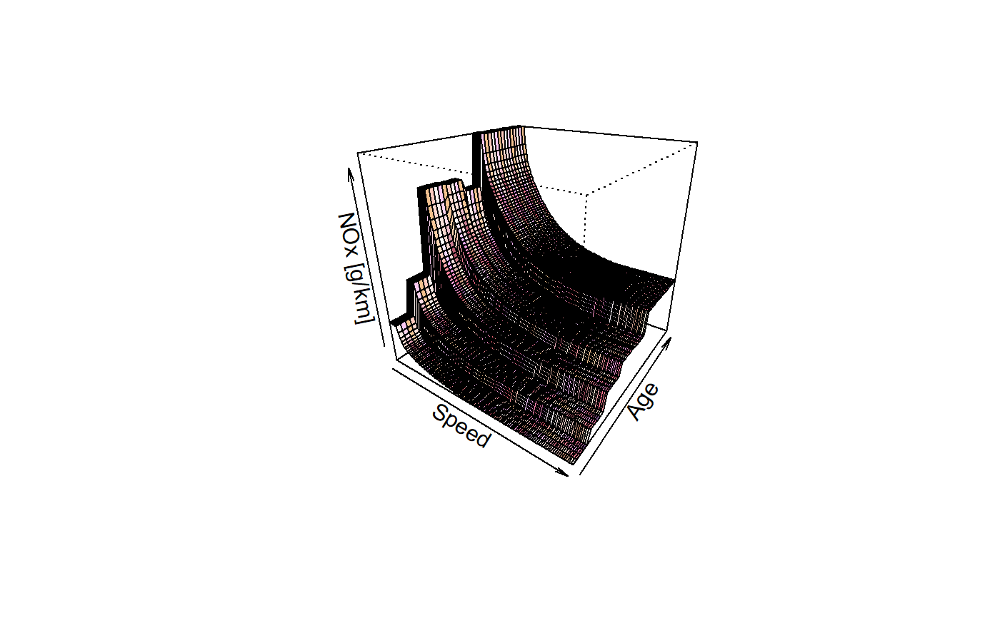

Emissions factors for Heavy Duty Vehicles based on average speed
ef_hdv_speed.RdThis function returns speed dependent emission factors. The emission factors comes from the guidelines EMEP/EEA air pollutant emission inventory guidebook http://www.eea.europa.eu/themes/air/emep-eea-air-pollutant-emission-inventory-guidebook
ef_hdv_speed(v, t, g, eu, x, gr = 0, l = 0.5, p, k = 1, show.equation = FALSE, speed, fcorr = rep(1, 8))
Arguments
| v | Category vehicle: "Coach", "Trucks" or "Ubus" |
|---|---|
| t | Sub-category of of vehicle: "3Axes", "Artic", "Midi", "RT, "Std" and "TT" |
| g | Gross weight of each category: "<=18", ">18", "<=15", ">15 & <=18", "<=7.5", ">7.5 & <=12", ">12 & <=14", ">14 & <=20", ">20 & <=26", ">26 & <=28", ">28 & <=32", ">32", ">20 & <=28", ">28 & <=34", ">34 & <=40", ">40 & <=50" or ">50 & <=60" |
| eu | Euro emission standard: "PRE", "I", "II", "III", "IV", "V". Also "II+CRDPF", "III+CRDPF", "IV+CRDPF", "II+SCR", "III+SCR" and "V+SCR" for pollutants Number of particles and Active Surface. |
| x | Numeric; if pollutant is "SO2", it is sulphur in fuel in ppm, if is "Pb", Lead in fuel in ppm. |
| gr | Gradient or slope of road: -0.06, -0.04, -0.02, 0.00, 0.02. 0.04 or 0.06 |
| l | Load of the vehicle: 0.0, 0.5 or 1.0 |
| p | Character; pollutant: "CO", "FC", "NOx", "NO", "NO2", "HC", "PM", "NMHC", "CH4", "CO2", "SO2" or "Pb". Only when p is "SO2" pr "Pb" x is needed. Also polycyclic aromatic hydrocarbons (PAHs), persistent organi pollutants (POPs), and Number of particles and Active Surface. |
| k | Multiplication factor |
| show.equation | Option to see or not the equation parameters |
| speed | Numeric; Speed to return Number of emission factor and not a function. It needs units in km/h |
| fcorr | Numeric; Correction by fuel properties by euro technology.
See |
Value
an emission factor function which depends of the average speed V g/km
Note
Pollutants (g/km): "CO", "NOx", "HC", "PM", "CH4", "NMHC", "CO2", "SO2", "Pb".
Black Carbon and Organic Matter (g/km): "BC", "OM"
PAH and POP (g/km): "indeno(1,2,3-cd)pyrene", "benzo(k)fluoranthene", "benzo(ghi)perylene", "fluoranthene", "benzo(a)pyrene", "pyrene", "perylene", "anthanthrene", "benzo(b)fluorene", "benzo(e)pyrene", "triphenylene", "3,6-dimethyl-phenanthrene", "benzo(a)anthracene", "phenanthrene", "napthalene", "anthracene"
Dioxins and furans (g equivalent toxicity / km): "PCDD", "PCDF" and "PCB".
Metals (g/km): "As", "Cd", "Cr", "Cu", "Hg", "Ni", "Pb", "Se", "Zn" (g/km). NMHC (g/km):
ALKANES (g/km): "ethane", "propane", "butane", "isobutane", "pentane", "isopentane", "heptane", "octane", "2-methylhexane", "nonane", "2-methylheptane", "2-methylhexane", "decane", "3-methylheptane", "alkanes_C10_C12"
CYCLOALKANES (g/km): "cycloalkanes".
ALKENES (g/km): "ethylene", "propylene", "isobutene", "2-butene", "1,3-butadiene"
ALKYNES (g/km): "acetylene".
ALDEHYDES (g/km): "formaldehyde", "acetaldehyde", "acrolein", "benzaldehyde", "crotonaldehyde", "methacrolein", "butyraldehyde", "propionaldehyde", "i-valeraldehyde"
KETONES (g/km): "acetone"
AROMATICS (g/km): "toluene", "ethylbenzene", "m-xylene", "p-xylene", "o-xylene", "1,2,3-trimethylbenzene", "1,2,4-trimethylbenzene", "1,3,5-trimethylbenzene", "styrene", "benzene", "C9".
Active Surface (cm2/km) (gr = 0 and l = 0.5): "AS_urban", "AS_rural", "AS_highway"
Total Number of particles (N/km) (gr = 0 and l = 0.5): "N_urban", "N_rural", "N_highway", "N_50nm_urban", "N_50_100nm_rural", "N_100_1000nm_highway".
The available standards for Active Surface or number of particles are: Euro II and III Euro II and III + CRDPF Euro II and III + SCR Euro IV + CRDPF Euro V + SCR
The categories Pre Euro and Euro I were assigned with the factors of Euro II and Euro III The categories euro IV and euro V were assigned with euro III + SCR
See also
Examples
{ # Quick view pol <- c("CO", "NOx", "HC", "NMHC", "CH4", "FC", "PM", "CO2", "SO2", "AS_urban", "AS_rural", "AS_highway", "N_urban", "N_rural", "N_highway", "N_50nm_urban", "N_50_100nm_rural", "N_100_1000nm_highway") f <- sapply(1:length(pol), function(i){ print(pol[i]) ef_hdv_speed(v = "Trucks",t = "RT", g = "<=7.5", e = "II", gr = 0, l = 0.5, p = pol[i], x = 10)(30) }) f # PAH POP ef_hdv_speed(v = "Trucks",t = "RT", g = "<=7.5", e = "II", gr = 0, l = 0.5, p = "napthalene", x = 10)(30) ef_hdv_speed(v = "Trucks",t = "RT", g = "<=7.5", e = "II", gr = 0, l = 0.5, p = "fluoranthene", x = 10)(30) # Dioxins and Furans ef_hdv_speed(v = "Trucks",t = "RT", g = "<=7.5", e = "II", gr = 0, l = 0.5, p = "PCB", x = 10)(30) # NMHC ef_hdv_speed(v = "Trucks",t = "RT", g = "<=7.5", e = "II", gr = 0, l = 0.5, p = "heptane", x = 10)(30) V <- 0:130 ef1 <- ef_hdv_speed(v = "Trucks",t = "RT", g = "<=7.5", e = "II", gr = 0, l = 0.5, p = "HC") plot(1:130, ef1(1:130), pch = 16, type = "b") euro <- c(rep("V", 5), rep("IV", 5), rep("III", 5), rep("II", 5), rep("I", 5), rep("PRE", 15)) lef <- lapply(1:30, function(i) { ef_hdv_speed(v = "Trucks", t = "RT", g = ">32", gr = 0, eu = euro[i], l = 0.5, p = "NOx", show.equation = FALSE)(25) }) efs <- EmissionFactors(unlist(lef)) #returns 'units' plot(efs, xlab = "age") lines(efs, type = "l") a <- ef_hdv_speed(v = "Trucks", t = "RT", g = ">32", gr = 0, eu = euro, l = 0.5, p = "NOx", speed = Speed(0:125)) a$speed <- NULL filled.contour(as.matrix(a), col = cptcity::lucky(n = 24), xlab = "Speed", ylab = "Age") persp(x = as.matrix(a), theta = 35, xlab = "Speed", ylab = "Age", zlab = "NOx [g/km]", col = cptcity::lucky(), phi = 25) aa <- ef_hdv_speed(v = "Trucks", t = "RT", g = ">32", gr = 0, eu = rbind(euro, euro), l = 0.5, p = "NOx", speed = Speed(0:125)) }#> [1] "CO" #> [1] "NOx" #> [1] "HC" #> [1] "NMHC" #> [1] "CH4" #> [1] "FC" #> [1] "PM" #> [1] "CO2" #> [1] "SO2" #> [1] "AS_urban" #> [1] "AS_rural" #> [1] "AS_highway" #> [1] "N_urban" #> [1] "N_rural" #> [1] "N_highway" #> [1] "N_50nm_urban" #> [1] "N_50_100nm_rural" #> [1] "N_100_1000nm_highway"#> Colour gradient: kst_20_hue_sat_light2, number: 4659#> Colour gradient: cw_5_cw5_096, number: 1025